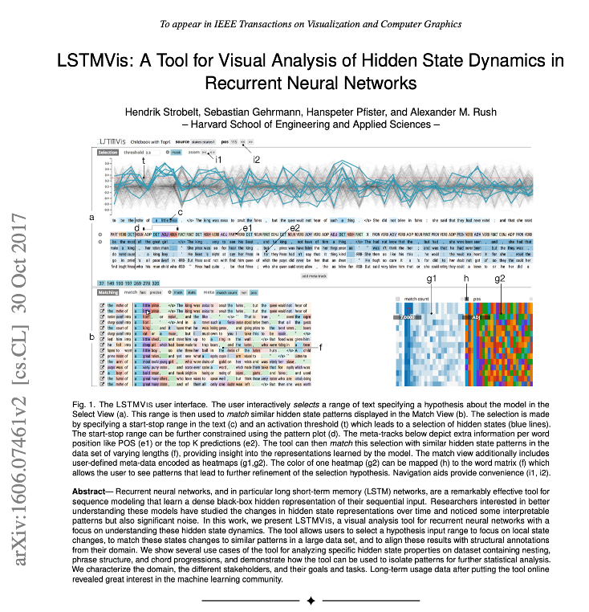
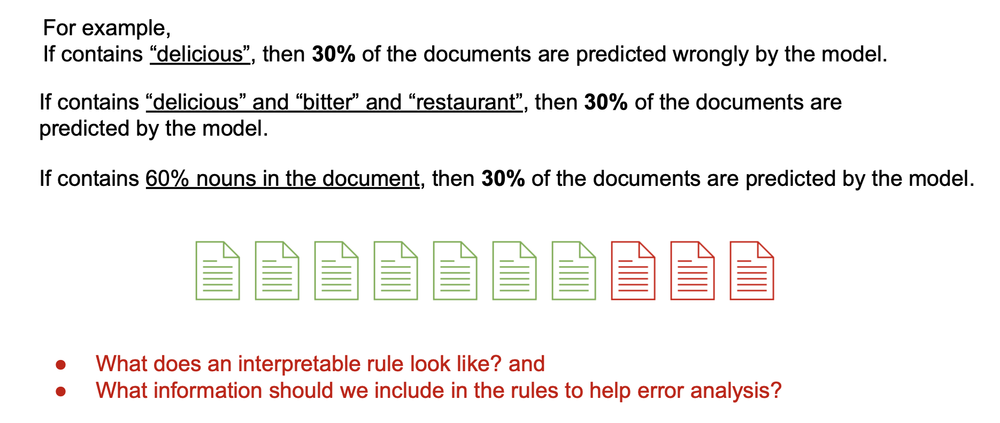
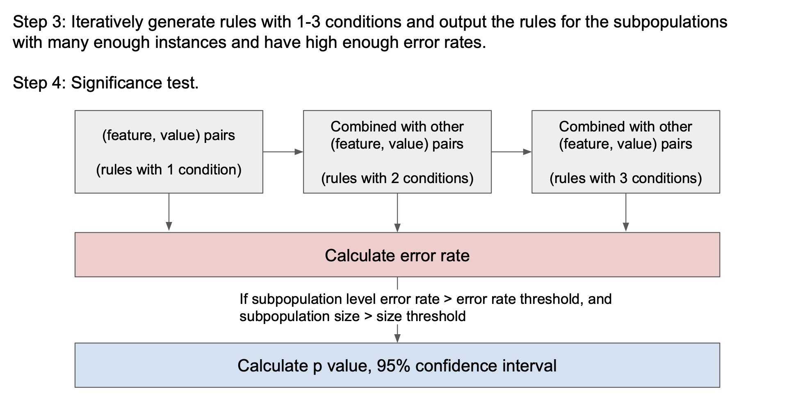
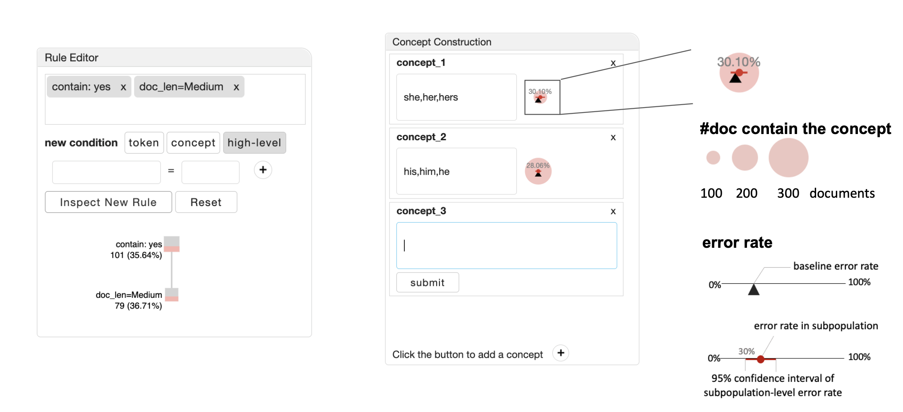
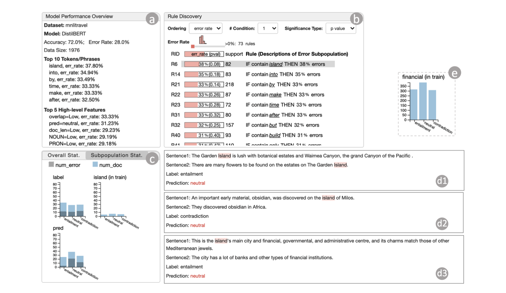

NLP and Large Language Models
Today’s Agenda
- NLP Fundamentals
- Text processing pipeline
- Traditional vs modern approaches
- Visualizing Model Internals
- RNN gradient flow
- Hidden state analysis
- Behavioral Analysis
- Error discovery patterns
- Counterfactual generation
- LLM Visualization
- Attention mechanisms
- Prompt engineering tools
Visualization for NLP
- NLP Basic
- Visualizing Traditional NLP Model’s Internal Structure
- Visualizing Traditional NLP Model’s Behavior
- Visualizing LLMs
NLP Basic: Text Processing Pipeline

NLP Basic: Word Embeddings

NLP Basic: Sequence Models

NLP Basic: Text Preprocessing

NLP Basic: Feature Extraction

NLP Basic: Language Model Architectures

NLP Tasks Taxonomy
Token & Syntax Level
- Named entity recognition
- Parts-of-speech tagging
- Dependency parsing
- Grammatical error correction
- Word sense disambiguation
- Coreference resolution
Document & Semantic Level
- Text summarization
- Question answering
- Machine translation
- Sentiment analysis
- Topic modeling
- Dialogue systems
Visualization for NLP
- NLP Basic
- Visualizing Traditional NLP Model’s Internal Structure
- Visualizing Traditional NLP Model’s Behavior
- Visualizing LLMs
Visualization for NLP
- NLP Basic
- Visualizing Traditional NLP Model’s Internal Structure
- Visualizing Traditional NLP Model’s Behavior
- Visualizing LLMs
RNNbow: Visualizing Gradient Flow
Key Innovation
- Visualizes backpropagation gradients in RNNs
- Reveals vanishing/exploding gradient problems
- Tracks learning dynamics across epochs
Applications
- Model debugging
- Architecture comparison
- Training optimization
RNN Architecture Visualization

Gradient Flow Analysis

Training Dynamics: Epoch Comparison
Gradient Evolution
- Early epochs: chaotic gradients
- Middle epochs: pattern emergence
- Late epochs: stable flow
- Convergence indicators
Visualizing Internal Structure: RNN
Comparing gradients at different epochs of training:
Visualizing Internal Structure: RNN
Exploring vanishing gradient
Visualizing Internal Structure: RNN
LSTMVis: Understanding Hidden States

Visualizing Internal Structure: Hidden States
Hidden values in LSTM/RNN
Visualizing Internal Structure: Hidden States
Hidden States Sequence of high-dimensional vectors. What are some options for visualization?
Visualizing Internal Structure: Hidden States
Hidden States Sequence of high-dimensional vectors. What are some options for visualization?
Visualizing Internal Structure: Hidden States
Hidden States Sequence of high-dimensional vectors. What are some options for visualization?
Visualizing Internal Structure: Hidden States
User selects sequences. Configurable threshold: all hidden states in the selected sequence must exceed threshold
Visualizing Internal Structure: Hidden States
User selects sequences. Configurable threshold: all hidden states in the selected sequence must exceed threshold
Collection-Level Hidden State Analysis
Visualization Challenges
- High dimensionality
- Temporal dynamics
- Multiple sequences
- Pattern discovery
Visualization for NLP
- NLP Basic
- Visualizing Traditional NLP Model’s Internal Structure
- Visualizing Traditional NLP Model’s Behavior
- Visualizing LLMs
iSea: Semantic Error Analysis
Overall Accuracy: 80% - But where are the failures?
Visualizing Behavior: iSea

Where does the model make mistakes?
Why does the model make these mistakes?
How can we improve the model performance?
…
Visualizing Behavior: iSea
Subpopulation-Level Error Analysis is Common for NLP Models 
Visualizing Behavior: iSea
Subpopulation-Level Error Analysis is Common for NLP Models 
Not able to capture the errors grounded in specific semantic concepts.
Requires prior knowledge to construct subpopulations.
Visualizing Behavior: iSea

Visualizing Behavior: iSea

Visualizing Behavior: iSea
Features to Describe A Subpopulation
- Token
- e.g., all the documents that contain “delicious”.
- Concept
- e.g., all the documents that contain “delicious”/“tasty”/”yummy”/…
- High-level Features
- e.g., all the documents that contain a high percentage of adjectives.
Visualizing Behavior: iSea
To describe error-prone subpopulations, we use a set of if-then rules. 
Visualizing Behavior: iSea
Through iterative design process, we identified four principles of presenting the error rules:
- Principle 1: Limit the number of conditions.
- To keep the rule interpretable.
- Principle 2: Test significance.
- To ensure the high error rate in the subpopulation does not occur by chance
- Principle 3: Limit the cardinality of features.
- Use low/medium/high instead of actual values (e.g., >20, <30) to keep it interpretable.
- Principle 4: Avoid negation for tokens.
- To ensure actionable insights.
Visualizing Behavior: iSea
Automatic Error Discovery 
Visualizing Behavior: iSea
Automatic Error Discovery 
Visualizing Behavior: iSea
Automatic Error Discovery 
Visualizing Behavior: iSea
Views to Support Learning 
Visualizing Behavior: iSea
Validating 
Visualizing Behavior: iSea
Validating 
Visualizing Behavior: iSea
Validating 
Visualizing Behavior: iSea
Interpret Errors Causes 
Visualizing Behavior: iSea
Hypothesis Testing 
Visualizing Behavior: iSea
Rule Editing & Concept Construction 
Visualizing Behavior: iSea

Polyjuice: Counterfactual Generation
Key Features
- Generates diverse counterfactuals
- Controls perturbation types
- Reveals model robustness issues
Applications
- Data augmentation
- Robustness testing
- Bias detection
Visualizing Behavior: Polyjuice

Visualization for NLP
- NLP Basic
- Visualizing Traditional NLP Model’s Internal Structure
- Visualizing Traditional NLP Model’s Behavior
- Visualizing LLMs
Attention Visualization in Transformers

LLM Architecture: Self-Attention

Multi-Head Attention Patterns
Visualizing LLMs

Visualizing LLMs

Visualizing LLMs

Visualizing LLMs

POEM: Prompt Engineering for Multimodal LLMs

Visualizing LLMs
Multi-Modal Interaction 
Visualizing LLMs
POEM: Interactive Prompt Optimization for Enhancing Multimodal Reasoning of Large Language Models